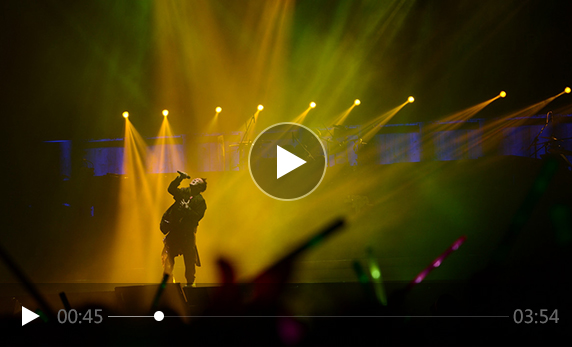

民国情书 我只爱过一个正当最好年龄的人
2017-03-06 安静的一朵云
现在很多人，明明在一个城市，甚至面对面坐着，却非要用电子通讯问候你好吗，或者，我想你，我爱你。这个时代的通讯越是发达，那些记录在纸页间一笔一划写的文字反而显得弥足珍贵。若是在过去，比如民国，我想你时，我会耐心的写一封情书，一字一句皆是深情，纸张间皆是思念，落笔情深意重。
你还记得你第一次写情书是什么年纪吗？还记得收到情书时怦然心动的青涩吗？
那些时光深处的记忆，那封手写情书的青春往事，是不是也曾令你念念不忘？
这个时代，我们不缺情，缺的是爱
这个时代，我们不缺情，缺的是爱；我们不缺人，缺的是伴；我们不缺孤单，缺的是那个能够懂自己孤单的人。
情人节即将到来，整理了一些民国文人们写的情书，愿你在新的一年有人怜惜你妩媚的眼泪，有厚实的肩膀让你依靠，愿你深夜哭过之后，第二天满血复活骄傲生活。好的感情对的人，其实在每一次遇见中都有机会发生，喜欢就去爱，伤心就放手，孤独就出门，很多东西并不是无趣，而是你选择当一个没有参与的旁观者。
【沈从文致张兆和】
我一辈子走过许多地方的路，行过许多地方的桥，看过许多次数的云，喝过许多种类的酒，却只爱过一个正当年龄的人。

关键词：民国、情书、沈从文